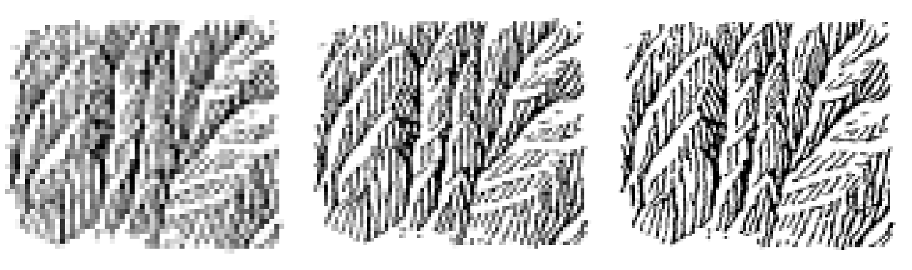
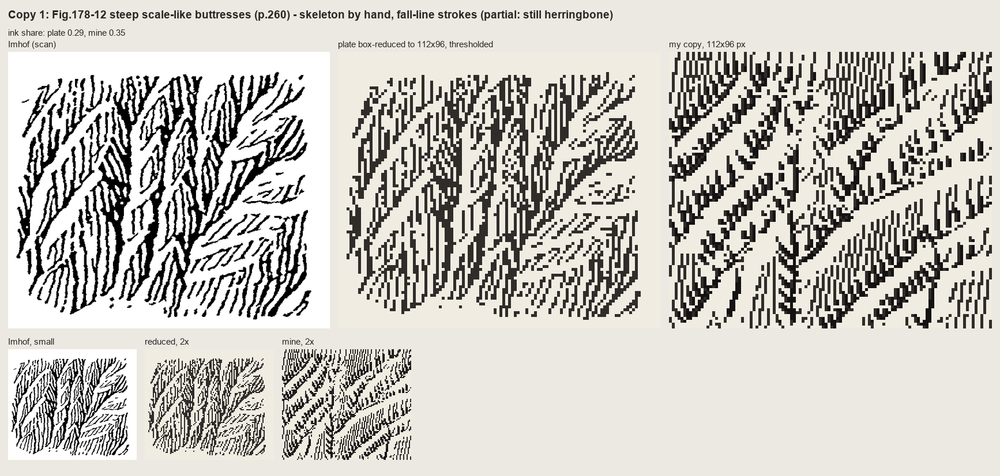
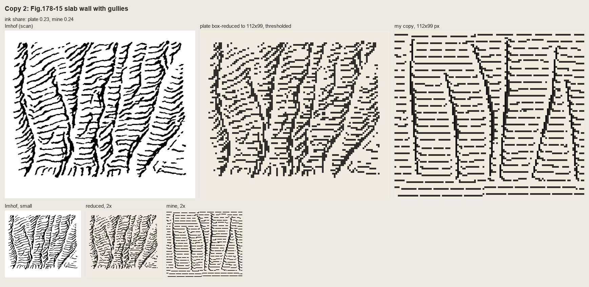
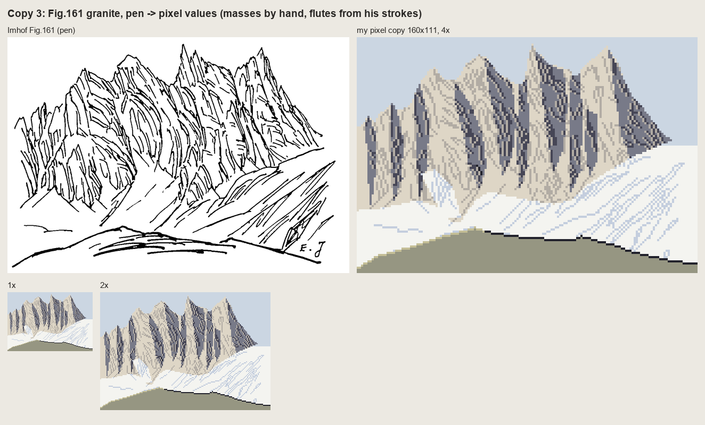
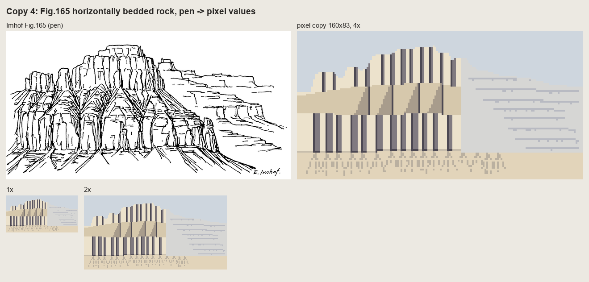
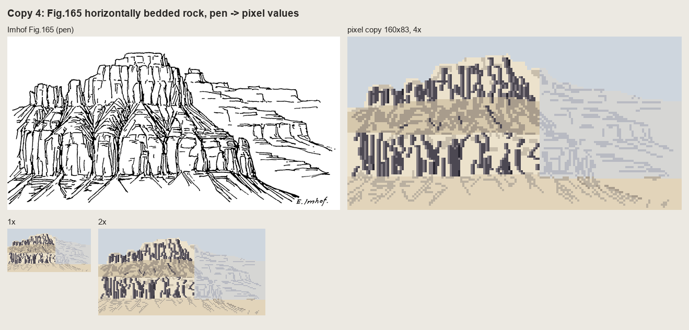

2. Copying a pen plate at pixel size
Imhof's instruction to his own students (p.273): "Good drawings of rock landscapes should also be copied ... good cartographic representations of rock masses can be copied at successively smaller scales. Only then should one try an independent piece of work." This page is how I did that in pixels, from the four copies in copies/. Two of them work and two don't yet, and the two that don't are the most instructive.
Why copy at all
I had read chapter 11 closely, taken notes on all seventeen panels of Fig.178, and could quote them. When I tried to put Fig.178-12 on a grid, I found I didn't know which way its strokes ran, where they started, or why they stopped. The rock student before me had applied Imhof's rules as a system to the Dragontail lidar and got "fur or wood grain, not granite". Reading gives you the rules; copying tells you what the rules are for.
Step 1: measure the plate at the size you'll copy it
Box-reduce the plate to candidate widths and look. Then measure what survives (code/measure_ink.py):
im = np.asarray(Image.open(sys.argv[1]).convert('L')) < 128 # 1-bit plate: True = ink
s = im.shape[1] / tw # source px per target px
# orientation from the structure tensor at stroke scale
f = ndi.gaussian_filter(im.astype(float), 2)
gy, gx = np.gradient(f)
Jxx = ndi.gaussian_filter(gx * gx, 12); Jyy = ndi.gaussian_filter(gy * gy, 12); Jxy = ndi.gaussian_filter(gx * gy, 12)
ang = 0.5 * np.degrees(np.arctan2(2 * Jxy, Jxx - Jyy)) + 90 # stroke direction
# pitch: ink runs and gaps across rows
for r in range(0, im.shape[0], 3):
d = np.diff(np.r_[0, im[r].astype(int), 0])
st = np.flatnonzero(d == 1); en = np.flatnonzero(d == -1)
runs += list(en - st); gaps += list(st[1:] - en[:-1])
== 178_12 ink share 0.258 pitch 13.0 src px = 2.18 target px median stroke 4.8 target px
== 178_15 ink share 0.198 pitch 20.0 src px = 3.36 target px median stroke 5.0 target px

nb090. Fig.178-12 box-reduced to 60, 84 and 110 px wide. At 60 the strokes have merged into tone. At 84-110 they survive. Measured and seen together, that gives the rule for everything after: a hachure pitch of 3 px is the finest that reads, and 2 px is tone.**
Step 2: grid it
code/grid.py scales the plate so that one target pixel is 8-11 screen pixels, draws a faint line per pixel and a red labelled one every 5, and optionally puts your copy beside it on the same grid. Everything you place by hand is read off it by coordinate.

nb094. Fig.178-12 at 112 px under the grid.
Step 3: place only the skeleton by hand
Imhof's form analysis (p.251-252) says what to place first: the demarcation lines, the gully lines, the crest lines, and only then the internal structure. For a small rock plate the gully lines are enough. They are "elongated, always linked", while the crests are "erratic, broken, interrupted" and in Imhof's drawings are not drawn. So the copy's only hand-made data is a list of gully polylines read off the grid:
GULLIES = [ # hand-placed from the gridded plate (x, y), each a gully descending to the lower left
[(3, 64), (12, 53), (22, 44), (32, 34), (40, 27), (46, 20)],
[(5, 42), (13, 33), (22, 24), (29, 16), (33, 8)],
...
]
My first copy did more than that. It drew each gully as a spine and hung barbs off it by rule, and it came out as combs:

nb095. Copy 1 of 178-12: barbs on spines. The spines read as outlines, which is exactly what the panel exists to forbid ("ridge crests are not drawn in, the scale-like type of structure being brought out by the variation of light and shadow").
Step 4: let the skeleton imply a surface, and draw its fall lines
The second copy stopped drawing strokes by rule. The gullies imply a surface: a steep wall cut by a V along each one. The strokes are that surface's fall lines, and the surface's light decides which of them are inked (copies/c178_12b.py):
z = -1.2 * yy + 0.22 * xx # the wall falls down the page, a little to the left
for g in GULLIES:
d = dist_to_poly(xx, yy, g)
z -= GD * np.clip(1 - d / GW, 0, None) ** 1.3 # a V-cut, a little concave
tone = I.imhof_tone(z, 1.0, az=315, el=40, local_dev=0, big_w=0, ap_low=1.0, diffuse=0.15)['t']
lines = HA.streamlines(z, sep=2.9, test=0.6, min_len=2.5, max_len=40, smooth=0.8, rng=rng)
tn = tone - np.median(tone) # the main wall is the mid tone
for L in lines:
dash = rng.integers(8, 16); gap = rng.integers(1, 3); k0 = rng.integers(0, dash) # plate: ~5 px strokes
for i, (r, c) in enumerate(L):
if ((i + k0) % (dash + gap)) >= dash: continue
t = tn[int(r), int(c)]
if t > 0.16: continue # lit wall: left open (the scraper)
C.px(c, r, 2)
if t < -0.18: C.px(c + 1, r, 3) # shaded wall: the stroke thickens
HA.streamlines is evenly spaced streamline placement (Jobard and Lefer). Its one important property is that a stroke ends when it comes within test × sep of another stroke. Where the fall lines converge into a gully, the strokes stop against each other, and that is the feathering in the plate, produced by nothing but spacing. The core loop is in page 3.

fig. Copy of 178-12, the final state, beside the plate and the plate reduced to the same size. Its ink share is 0.35 against the plate's 0.29. This copy doesn't work yet. A critic called it herringbone. The strokes meet each gully like barbs from below, where Imhof's arrive from above at an acute angle and fan out with each buttress. My surface (a plane with V-cuts) is the wrong surface. I haven't read correctly which way his scales face.
A copy that works: Fig.178-15, form lines
Fig.178-15 is "a slab-like wall, channelled by narrow gullies. The whole surface lies in a light medium-tone, provided by horizontal form lines. Each gully, however, has a crisp illuminated side paralleled by a well defined shadow." Its form lines are nothing but the contours of the implied surface, drawn as dashes (copies/c178_15.py):
z = -1.0 * (yy + 0.28 * xx) + 0.8 * np.sin(xx / 17.0) # the wall: form lines rise to the right, as on the plate
for g in GULLIES:
d, sd = dist_to_poly(xx, yy, g)
z -= 9.0 * np.clip(1 - d / GW, 0, None) ** 0.7 # narrow gully: contours kink down into it
z += ndi.gaussian_filter(rng.normal(0, 1, z.shape), 3) * 6.0 # the lines wobble
z += 1.5 * np.clip(gd / 12.0, 0, 1) # strips between gullies bulge
PITCH = 4.1 # plate: form lines every ~4 px
for lev, poly in S.contour_lines(z, PITCH, offset=rng.uniform(0, PITCH)):
... # dashes of 10-24 px with 2-6 px gaps,
if gd[ri, ci] < 1.6: continue # stopping short of each gully floor
# each gully: a well defined shadow on its east-facing wall, the lit side scraped
for g in GULLIES:
pts = np.array(g, float)
C.line([tuple(p + np.array([1.0, 0])) for p in pts], 3)
C.line([tuple(p + np.array([2.0, 0])) for p in pts[:-1]], 3)
C.line([tuple(p + np.array([3.0, 0])) for p in pts[1:-1]], 2)
C.erase([tuple(p + np.array([-1.0, 0])) for p in pts]) # the crisp lit side

nb101. v1: the form lines cross the gullies dead straight. Ruled paper.

fig. Final: the gullies cut deep enough that every contour hooks down into them. The chevrons in the plate come free from the geometry, and each gully is a 2-3 px shadow wedge with a lit pixel on its light side. Still wrong: my gully lines are ruler-straight, and the dashes are too regular.
The mark in this copy is the most transferable thing in the book: a gully is a dark line plus one lit pixel on its light side. Fig.178-17, the poor version, is a gully drawn as shadow strokes only, and "these strokes do not achieve the desired effect because there are no illuminated strips representing the opposite sides of the gullies".
Whole drawings: translate through values
A pen drawing of a whole range can't be copied stroke for stroke at pixel size. I tried both obvious ways on Fig.161, the granite range (copies/copy_pen.py):

nb107. The plate; its photographic reduction to 200 px; every stroke skeletonized and redrawn at 1 px; only strokes of 4 px or more; and the drawing's own stroke density read as three tones. The line copies are Imhof's Fig.192 failure (his own 1:50,000 rock drawing reduced photographically to 1:150,000: a tangle, where the redrawn Fig.191 keeps the bands and gullies). Only the density version looked like mountains.
So the copy translates the drawing into values: the masses placed by hand as polygons, the pen's long flutes kept as marks, and every rule from the book applied as a step on the index map (copies/c161_paint.py):
idx[massif] = 3 # lit granite
for sp in SHADE: # right flanks and clefts, by hand from the grid
idx[poly_mask(sp) & massif] = 5
# his flutes, vectorized from the plate, kept if they carry form at this size
for t in ST:
if t['length'] < 4: continue
marks.line([tuple(p) for p in t['pts']], 3 if t['width'] > 1.6 * wmed else 2)
idx[on_lit] = 4 # a flute on a lit face: one step down
idx[on_shade] = 6 # in shade: the crevice step
lit_side = np.roll(on_shade, -1, axis=1) & (idx == 5)
idx[lit_side] = 4 # 178-15: each crevice gets its lit side
lowpart = massif & (yy > foot_y[None, :] - 9) # aerial perspective: contrast falls toward the foot (p.263)
idx[lowpart & (idx == 5)] = 4
... # the foot garlanded by snow tongues (p.247)
edge_lit = massif & np.roll(sky, 1, axis=1) & (idx == 3)
idx[edge_lit] = 1 # saw-tooth skyline: tiny lights cut the edge (p.263)


nb109, and the final copy. The book's rules visibly do something: the foot softens, the garland appears, and the needle tips catch light. A critic called this the only copy that works as pixel art. Its faults, in its words and mine: the shadow flutes are a picket fence of equal bands where his converge, split and taper; the skyline's gendarmes have gone soft; and the flat outlined foreground ridge is from another style.
The copy that failed: Fig.165, and what failing taught
Fig.165, horizontally bedded rock, is the Yakima Canyon's model. It took five rounds, and it's still the weakest copy.


nb112, nb113. Round 1, a band chart with barcode joints. Round 2, Imhof's strokes transferred one-to-one and classified by zone: pen graffiti on a fill.

nb115. The plate at 11 screen pixels per target pixel. This is where I finally saw that the lower wall is a row of rounded pillars with tombstone tops, and that the "trees" are gullies whose dark trunks branch upward into the bench debris.


Round 4, built from pillars and gully trees, and round 5 after the critic. The critic said it reads as a fence: the horizontal bedding, which is the subject, has become vertical pillars. Round 5 puts the ledges back across the pillars, and the vertical rhythm still wins.
The lesson is exactly the one Imhof puts in his caption ("banded, stepped slopes") and in his instruction: analyse the large forms first, and only then "the layering, bedding and form of the ridge crests". I drew the joints because they were the strokes I could see, and lost the beds, which are the structure. Copy the structure the caption names, not the strokes you can count.
What the copies taught
- In the Swiss style rock is dark by the density of its strokes on shaded faces. The ground under them is lighter than you'd expect.
- Pitch: 3 px is the finest that reads, 4 px for form lines. At 2 px strokes merge into tone.
- Only the skeleton is placed by hand. The strokes can follow from the surface it implies.
- A gully is a dark line with a lit pixel beside it.
- A pen drawing survives reduction only when it's translated into values.
- Imhof's economy is uneven: dense where the form turns away, empty where it's lit. Everything I made that is evenly spaced reads as a machine, and that includes the copies.